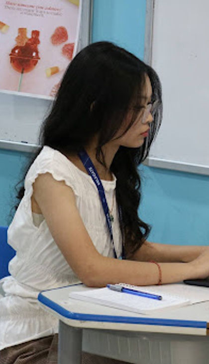

Ou Monypanhachoranay
Hello Delegates,
My name is Monypanhachoranay Ou, but you can call me Chon. I am currently a junior at CIA First Chbar Ampov International School, and it is an honor to serve as your Editor In-Chief of Press Corps at AUPPMUN.
While this is my first time chairing, I have participated in seven MUN conferences and have experience in journalism, creative writing, video production, and media.
Press corps is more than just taking photos and writing articles, it captures the spirit, diplomacy and the humorous moments that makes a conference unique.
As your Editor In-Chief, I will evaluate your work fairly, provide constructive feedback, and encourage creativity and professionalism. I look forward to reading your articles, seeing your interviews, and working with all of you throughout the conference.
If you have any questions, feel free to reach out. See you at AUPPMUN!